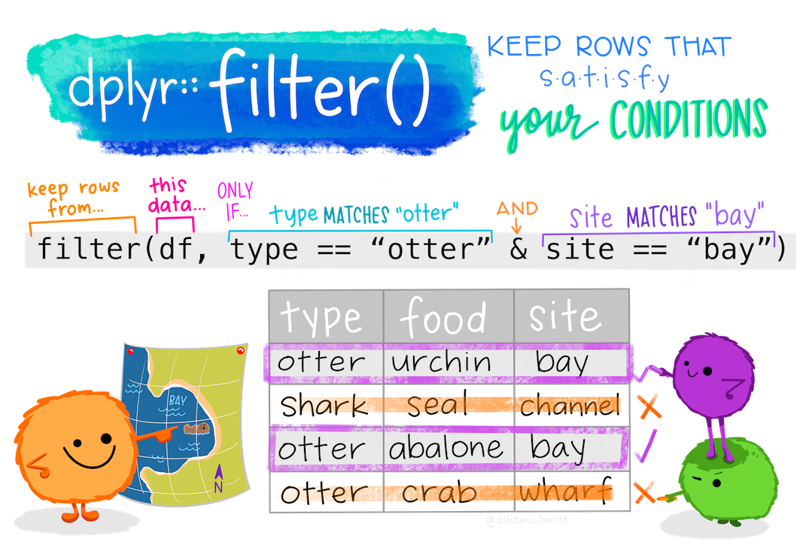
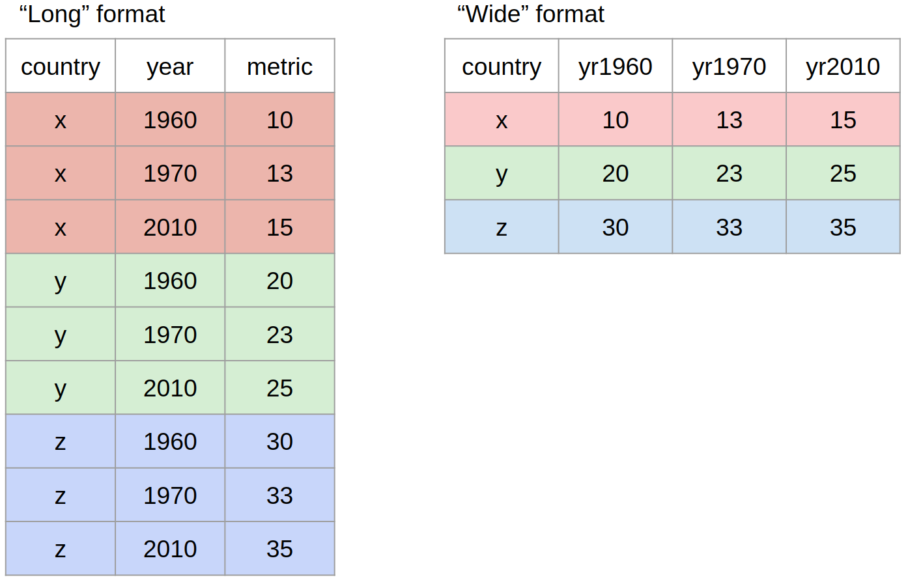

# R can work as a basic calculator <- this is a code comment
5 + 3[1] 8To recap what we learnt in the previous sessions.. we now know to work within the R Project environment. here::here() makes it easy for us to manage file paths. You can quickly have a look at your data using the View() and glimpse() functions. Most of the tidy data is read as tibble which is a workhorse of tidyverse.

Today we will be working in a RMarkdown Document (*.Rmd). This is one of the recommended practices when working with data analysis projects. RMarkdown interweaves prose with code. Prose are written in plain text and R code is contained in gray “r code chunks”.
Let’s write our first R code. To insert a new R code chunk press Ctrl+Alt+I OR CMD+Option+I.
# R can work as a basic calculator <- this is a code comment
5 + 3[1] 8# Load the required packages
library(tidyverse) # required for tidy workflows
library(rio) # required for importing and exporting data
library(here) # required for managing file pathshere() starts at C:/Users/Arun/Dropbox/PhD/Workshops/AIIMS_Mangalagiri/NWHDA_MangalagiriNote
The shortcut for code commenting is Ctrl+Shift+C. Try doing it in the code cunk and the text part.
The dataset we will be working with has been cleaned (to an extent) for the purposes of this workshop. It is a dataset about tuberculosis that has been downloaded from the World Health Organization and cleaned up for our use. The raw dataset and many more such data are publicly available at: https://www.who.int/teams/global-tuberculosis-programme/data for download.
# Check the file path
here::here("data", "who_tubercolosis_data.csv")[1] "C:/Users/Arun/Dropbox/PhD/Workshops/AIIMS_Mangalagiri/NWHDA_Mangalagiri/data/who_tubercolosis_data.csv"# Read Data
tb <- rio::import(
here::here("data", "who_tubercolosis_data.csv"), setclass = 'tibble')Try the following functions using tb as the argument:
glimpse()head()names()Today, we will be introducing you to three new packages:
dplyrskimrDataExplorerdplyr PackageThe dplyr is a powerful R-package to manipulate, clean and summarize unstructured data. In short, it makes data exploration and data manipulation easy and fast in R.

There are many verbs in dplyr that are useful, some of them are given here…


|> or %>%
Note
The pipe |> means THEN…
The pipe is an operator in R that allows you to chain together functions in dplyr.
Let’s find the bottom 50 rows of tb without and with the pipe.
Tips The native pipe |> is preferred.
#without the pipe
tail(tb, n = 50)
#with the pipe
tb |> tail(n = 50)Now let’s see what the code looks like if we need 2 functions. Find the unique countries in the bottom 50 rows of tb.
#without the pipe
unique(tail(tb, n = 50)$country)
# with the pipe
tb |>
tail(50) |>
distinct(country)Note
The shortcut for the pipe is Ctrl+Shift+M
You will notice that we used different functions to complete our task. The code without the pipe uses functions from base R while the code with the pipe uses a mixture (tail() from base R and distinct() from dplyr). Not all functions work with the pipe, but we will usually opt for those that do when we have a choice.
distinct() and count()The distinct() function will return the distinct values of a column, while count() provides both the distinct values of a column and then number of times each value shows up. The following example investigates the different regions (who_region) in the tb dataset:
tb |>
distinct(who_region)
tb |>
count(who_region)Notice that there is a new column produced by the count function called n.
arrange()The arrange() function does what it sounds like. It takes a data frame or tbl and arranges (or sorts) by column(s) of interest. The first argument is the data, and subsequent arguments are columns to sort on. Use the desc() function to arrange by descending.
The following code would get the number of times each region is in the dataset:
tb |>
count(who_region) |>
arrange(n)
# Since the default is ascending order,
# we are not getting the results that are probably useful,
# so let's use the desc() function
tb |>
count(who_region) |>
arrange(desc(n))
# shortcut for desc() is -
tb |>
count(who_region) |>
arrange(-n)“How many countries are there in the tb dataset?
Which countries have fewer than 18 rows of data?
Which country in which year has the highest tb incidence per 100k?
Which country in which year has the highest tb incidence number?
filter()If you want to return rows of the data where some criteria are met, use the filter() function. This is how we subset in the tidyverse. (Base R function is subset())

Here are the logical criteria in R:
==: Equal to!=: Not equal to>: Greater than>=: Greater than or equal to<: Less than<=: Less than or equal toIf you want to satisfy all of multiple conditions, you can use the “and” operator, &.
The “or” operator | (the vertical pipe character, shift-backslash) will return a subset that meet any of the conditions.
Let’s see all the data from 2015 or more recent
tb |>
filter(year >= 2015)Let’s just see data from India
tb |>
filter(country == "India")Both India and 2015 or more recent
tb |>
filter(year >= 2015 & country == "India")Which countries have incidence_100k below 5?
tb |>
filter(incidence_100k < 5) |>
distinct(country)
# see them all
tb |>
filter(incidence_100k < 5) |>
distinct(country) |>
print(n = Inf)%in%To filter() a categorical variable for only certain levels, we can use the %in% operator.
Let’s see data from India, Nepal, Pakistan and Bangladesh First we will have to figure out how those are spelled in this dataset. Open the spreadsheet viewer and find out. We’ll see a way to find them in code later on in the course.
Ok, so we figured out that they are spelled:
Now we’ll create a vector of countries we are interested in
indian_subcont <- c("India",
"Nepal",
"Pakistan",
"Bangladesh")And use that vector to filter() tb for countries %in% indian_subcont
tb |> filter(country %in% indian_subcont)You can also save the results of a pipeline. Notice that the rows belonging to Indian Subcontinent are returned in the console. If we wanted to do something with those rows, it might be helpful to save them as their own dataset. To create a new object, we use the <- operator.
indian_subcont_tb <- tb |> filter(country %in% indian_subcont)drop_na()The drop_na() function is extremely useful for when we need to subset a variable to remove missing values.
Return the tb dataset without rows that were missing on the hiv_incidence_100k variable
tb |> drop_na(hiv_incidence_100k)Return the tb dataset without any rows that had an NA in any column. *Use with caution because this will remove a lot of data
tb |> drop_na()select()Whereas the filter() function allows you to return only certain rows matching a condition, the select() function returns only certain columns. The first argument is the data, and subsequent arguments are the columns you want.
See just the country, year, incidence_100k columns
# list the column names you want to see separated by a comma
tb |>
select(country, year, incidence_100k)Use the - sign to drop these same columns
tb |>
select(-country, -year, -incidence_100k)select() helper functionsThe starts_with(), ends_with() and contains() functions provide very useful tools for dropping/keeping several variables at once without having to list each and every column you want to keep. The function will return columns that either start with a specific string of text, ends with a certain string of text, or contain a certain string of text.
# these functions are all case sensitive
tb |>
select(starts_with("percent"))
tb |>
select(ends_with("r"))
tb |>
select(contains("_"))
# columns that do not contain -
tb |>
select(-contains("_"))summarize()The summarize() function summarizes multiple values to a single value. On its own the summarize() function doesn’t seem to be all that useful. The dplyr package provides a few convenience functions called n() and n_distinct() that tell you the number of observations or the number of distinct values of a particular variable.
Note summarize() is the same as summarise()
Notice that summarize takes a data frame and returns a data frame. In this case it’s a 1x1 data frame with a single row and a single column.
tb |>
summarize(mean(hiv_percent))
# watch out for nas. Use na.rm = TRUE to run the calculation after excluding nas.
tb |>
summarize(mean(hiv_percent, na.rm = TRUE))The name of the column is the expression used to summarize the data. This usually isn’t pretty, and if we wanted to work with this resulting data frame later on, we’d want to name that returned value something better.
tb |>
summarize(hiv_percent = mean(hiv_percent, na.rm = TRUE))group_by()We saw that summarize() isn’t that useful on its own. Neither is group_by(). All this does is takes an existing data frame and converts it into a grouped data frame where operations are performed by group.
tb |>
group_by(year)
tb |>
group_by(year, who_region)group_by() and summarize() togetherThe real power comes in where group_by() and summarize() are used together. First, write the group_by() statement. Then pipe the result to a call to summarize().
Let’s summarize the mean incidence of tb for each year
tb |>
group_by(year) |>
summarize(mean_inc = mean(incidence_100k, na.rm = TRUE))
#sort the output by descending mean_inc
tb |>
group_by(year) |>
summarize(mean_inc = mean(incidence_100k, na.rm = TRUE)) |>
arrange(desc(mean_inc))mutate()Mutate creates a new variable or modifies an existing one.

Lets create a column called ind_sub if the country is in the Indian Subcontinent.
# use our vector indian_subcont that we created before
tb |>
mutate(indian_sub1 = if_else(country %in% indian_subcont,
"Indian Subcontinent", "Others"))The same thing can be done using case_when().
tb |>
mutate(indian_sub2 = case_when(country %in%
indian_subcont ~
"Indian Subcontinent",
TRUE ~ "Other")) Lets do it again, but this time let us make it 1 and 0, 1 if it is a country in the Indian Subcontinent, 0 if otherwise.
tb |>
mutate(indian_sub3 = case_when(country %in% indian_subcont ~ 1,
TRUE ~ 0))
Note
The if_else() function may result in slightly shorter code if you only need to code for 2 options. For more options, nested if_else() statements become hard to read and could result in mismatched parentheses so case_when() will be a more elegant solution.
As a second example of case_when(), let’s say we wanted to create a new population variable that is low, medium, or high.
See the pop broken into 3 equally sized portions
quantile(tb$pop, prob = c(.33, .66))Note
See the help file for quanile function or type ?quantile in the console.
We’ll say:
tb |>
mutate(popcat = case_when(pop <= 2043237 ~ "low",
pop > 2043237 & pop <= 11379155 ~ "med",
TRUE ~ "high"))join()Typically in a data science or data analysis project one would have to work with many sources of data. The researcher must be able to combine multiple datasets to answer the questions he or she is interested in. Collectively, these multiple tables of data area called relational data because more than the individual datasets, its the relations that are more important.
As with the other dplyr verbs, there are different families of verbs that are designed to work with relational data and one of the most commonly used family of verbs are the mutating joins.

These include:
left_join(x, y) which combines all columns in data frame x with those in data frame y but only retains rows from x.
right_join(x, y) also keeps all columns but operates in the opposite direction, returning only rows from y.
full_join(x, y) combines all columns of x with all columns of y and retains all rows from both data frames.
inner_join(x, y) combines all columns present in either x or y but only retains rows that are present in both data frames.
anti_join(x, y) returns the columns from x only and retains rows of x that are not present in y.
anti_join(y, x) returns the columns from y only and retains rows of y that are not present in x.

Apart from specifying the data frames to be joined, we also need to specify the key column(s) that is to be used for joining the data. Key columns are specified with the by argument, e.g. inner_join(x, y, by = "subject_id") adds columns of y to x for all rows where the values of the “subject_id” column (present in each data frame) match. If the name of the key column is different in both the dataframes, e.g. “subject_id” in x and “subj_id” in y, then you have to specify both names using by = c("subject_id" = "subj_id").
pivot()Most often, when working with our data we may have to reshape our data from long format to wide format and back. We can use the pivot family of functions to achieve this task. What we mean by “the shape of our data” is how the values are distributed across rows or columns. Here’s a visual representation of the same data in two different shapes:

“Long” format is where we have a column for each of the types of things we measured or recorded in our data. In other words, each variable has its own column.
“Wide” format occurs when we have data relating to the same measured thing in different columns. In this case, we have values related to our “metric” spread across multiple columns (a column each for a year).
Let us now use the pivot functions to reshape the data in practice. The two pivot functions are:
pivot_wider(): from long to wide format.pivot_longer(): from wide to long format.Check out the Data Wrangling cheatsheet that covers dplyr and tidyr functions.(https://rstudio.com/wp-content/uploads/2015/02/data-wrangling-cheatsheet.pdf)
Review the Tibbles chapter of the excellent, free R for Data Science book.(https://r4ds.had.co.nz/tibbles.html)
Check out the Transformations chapter to learn more about the dplyr package. Note that this chapter also uses the graphing package ggplot2 which we have covered yesterday.(https://r4ds.had.co.nz/transform.html)
Check out the Relational Data chapter to learn more about the joins.(https://r4ds.had.co.nz/relational-data.html)
In 2007, which 10 countries had the highest incidence_100k?
Within the South East Asia who_region, which countries have incidence_100K > 300?
How many countries are in each who_region? Put the output in order from lowest to highest number of countries. Hint: use distinct() and arrange()
Which country in which year has the highest incidence of tuberculosis?
Excluding missing values on hiv_incidence_100k, what is the correlation coefficient for the relationship between the tb incidence_100k and the hiv_incidence_100k for each region. Show the output with the highest correlations first. Hint: use cor()
skimr Packageskimr is designed to provide summary statistics about variables in data frames, tibbles, data tables and vectors. The core function of skimr is the skim() function, which is designed to work with (grouped) data frames, and will try coerce other objects to data frames if possible.

Give skim() a try.
tb |> skimr::skim()Check out the names of the output of skimr
tb |> skimr::skim() |> names()Also works with dplyr verbs
tb |> group_by(who_region) |> skimr::skim()tb |> skimr::skim() |>
dplyr::select(skim_type, skim_variable, n_missing)DataExplorer PackageThe DataExplorer package aims to automate most of data handling and visualization, so that users could focus on studying the data and extracting insights.1

The single most important function from the DataExplorer package is create_report()
Try it for yourself.
library(DataExplorer)
create_report(tb)Create a report on Exploratory Data Analysis using RMarkdown
Use DataExplorer to explore the given data